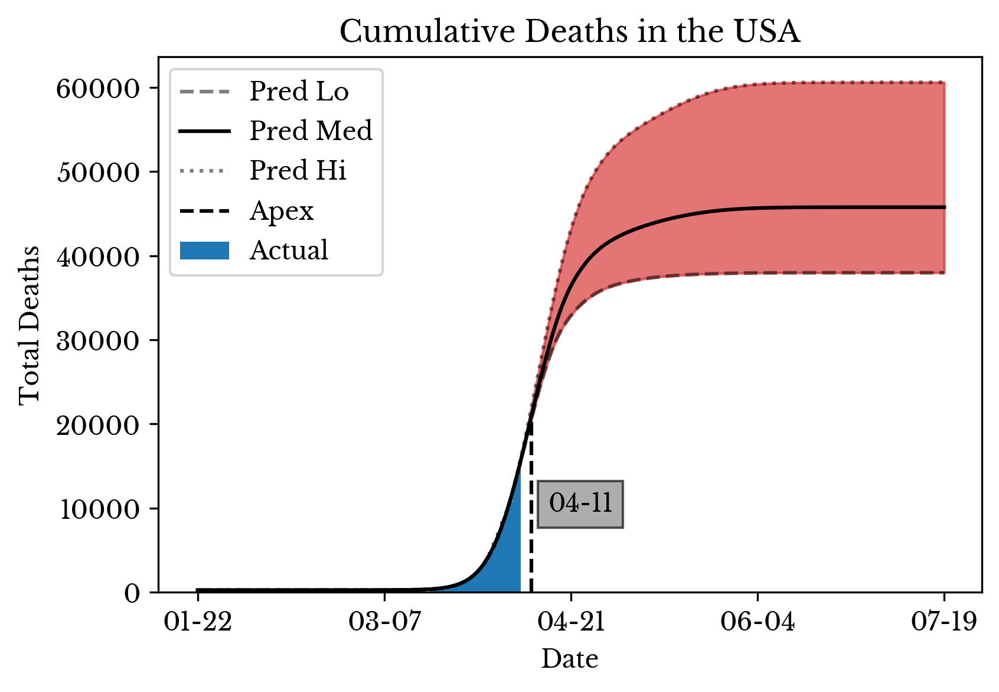

CoVID-19 Projections using Kernel SVR and Death Rate Analysis
Sun, 05 Apr 2020
Covid-19, Data Science, Data Visualization, Statistics
Updated April 8th 2020I've spent a disturbing amount of time trying to come up with a decent model for the CoVID-19 pandemic. The big challenge is how little good data there is. Pretty much all available data is riddled with confounding variables and bias. There is a long list of challenges but some I find most daunting are that:
- Testing is concentrated on the most affected sub-populations
- Testing capacity is limited and random sampling is not performed
- Countries employ vastly different strategies to contain the outbreak
- Countries differ in the ways they count and report cases and deaths
- The nature of this event is unprecedented
- Ridiculous model parameters
- Ridiculous model predictions
The basic idea is to estimate the rate of change in the number of deaths instead of relying on the constants from compartmental models. A model can be constructed that predicts percentage change in number of deaths given information about a country and a temporal factor.
In this case, a regularized kernel SVR is employed. The percentage change in number of deaths fluctuates wildly early in an outbreak. To reduce the impact of this, outliers are removed and samples occurring earlier in the outbreak are assigned less weight. Some of the factors included in the model:
- Population size
- Time of outbreak
- Recent number of deaths
In Figure 1, the five dashed lines correspond to the estimated curves for the five countries plotted in the scatter plot. The model is fit using the data of 15 countries, though only 5 are shown here so that the plot does not become overly messy.

Figure 1: Death Rate Estimation
With the model to estimate the percentage change in total deaths, initial values for the problem are estimated using numerical optimization. Namely, values are used that produce curves most closely matching the observed data in terms of MSE.
{kind=link}
{kind=link}
Figure 2: CoVID-19 Deaths in the USA by State
With both of these in place, the final curve is constructed using calculations similar to those used in an SIR model. Figure 2 shows the daily and cumulative estimated death curves for each state in the US. The top ten states are ranked by severity in the legends.
|  |
{kind=link}
{kind=link}
{kind=link}
Figure 3: CoVID-19 Death Projections for the USA
Figure 3 gives projections for the entire nation by summing the individual curves of each of the states and provinces in the USA. A range of predictions is computed by varying the parameters of the kernel SVR model.
{kind=link}
{kind=link}
{kind=link}
{kind=link}
{kind=link}
{kind=link}
Figure 4: CoVID-19 Death Daily Deaths and Prediction by State
Finally, Figure 4 shows the actual data alongside the values predicted by the model for several individual states. The dotted lines show the percentage rate of change in the cumulative death curve predicted by the SVR model.
Note: The data used in this post is taken from the COVID-19 Data Repository by Johns Hopkins CSSE GitHub page.